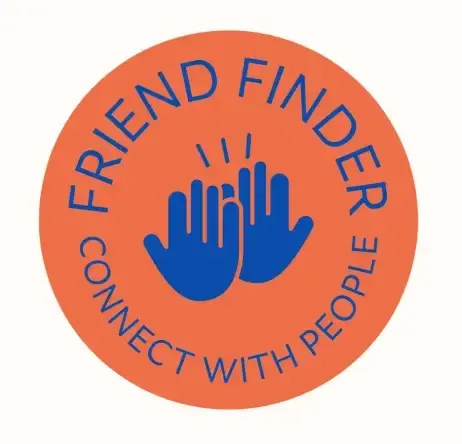

Procesportfolio
Multimediedesign · Ingrid Klein. Her følger jeg mine semestre, projekter og workshops gennem studiet — proces, forsøg og det der kom ud af det.
Multimediedesign · Ingrid Klein. Her følger jeg mine semestre, projekter og workshops gennem studiet — proces, forsøg og det der kom ud af det.


Mit navn er Ingrid, og jeg studerer Multimediedesign. Jeg har valgt uddannelsen, fordi jeg interesserer mig for samspillet mellem design, kommunikation og digitale løsninger.
Jeg motiveres af at arbejde kreativt og struktureret med projekter, hvor brugeroplevelse og formidling er i fokus. På studiet har jeg især arbejdet med idéudvikling, UX/UI, prototyping og digital kommunikation, og jeg finder det spændende at omsætte teori til konkrete løsninger.
Gennem uddannelsen ønsker jeg at udvikle mine kompetencer inden for designprocesser og brugercentreret design, og jeg er særligt interesseret i, hvordan man skaber overskuelige og intuitive digitale løsninger.
Mit procesportfolio fungerer som en dokumentation af min faglige udvikling, mine arbejdsprocesser og de refleksioner, jeg gør mig undervejs i studiet.





På 1. semester har jeg arbejdet med grundlæggende design- og udviklingsprocesser inden for multimediedesign. Fokus har været på at forstå arbejdsmetoder, idéudvikling og hvordan teori omsættes til praktiske løsninger.
Gennem semesteret har jeg anvendt metoder som research, brainstorming, wireframing og prototyping. Jeg har arbejdet med værktøjer som Figma og WordPress til at udvikle og visualisere digitale koncepter.
Semesteret har givet mig en bedre forståelse for designprocessens opbygning og vigtigheden af brugerfokus. Jeg har lært at arbejde mere struktureret og reflekteret og har opnået større sikkerhed i mine designvalg.


Projekt 3 - Eksamensprojet
Projekt 2

Intro projekt
Studietur
Workshop 1

Projekt 1